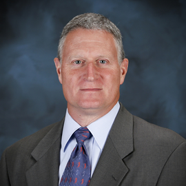
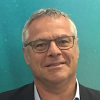
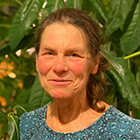

{kind=link}
Abstract
Energy efficiency is no longer just an operational goal; it is a contractual necessity. Procurements have evolved as leadership-class systems push against facility power limits and institutional carbon-neutrality goals. This Birds-of-a-Feather (BoF) session explores how the world’s leading facilities are using procurement language to drive energy efficiency and sustainability. We will compare three distinct global approaches to buying the next generation of supercomputers;
- strict engineering constraints and technical enforcement,
- co-design by early partnering with a vendor,
- optimizing between metrics such as performance, energy efficiency, carbon-neutrality and cost effectiveness.
This session is designed as a “Community Exchange Open Forum”, which will follow presentations with questions like the following: "Looking past Discovery, FugakuNext, and Alice Recoque—for your next system (System N+2) in the 2030s—what is the one procurement clause you don't have today that you wish you could write into a contract? Is it a mandate for 100% renewable power matching? A requirement for recyclable liquid cooling fluid? Or something else?"
Scope
This Birds of a Feather (BoF) at ISC 2026 addresses an emerging community need for actionable guidance on sustainable HPC procurement and energy efficiency and is expected to attract participants, including HPC system administrators, facility managers, procurement specialists, researchers, and vendors from academia, government, and industry worldwide. This session is designed as a “Community Exchange Open Forum”, not a traditional panel. Speakers act as consultants responding to audience scenarios and questions, keeping the focus on engagement with the room rather than discussion among the speakers themselves.
Agenda
Speakers
 |
Oak Ridge National Laboratory, USA |
Jim Rogers will discuss procurements for the Frontier Supercomputer that was installed in 2022 and Discovery (OLCF-6) that is scheduled to be installed in 2028. His topics may include the shift to strict power budgets (e.g., the 30-40 MW cap ), the requirement for application-driven runtime power & energy management", and the mandate for AI-optimized storage.
BIO Jim Rogers is Computing and Facilities Director for the National Center for Computational Science at the Oak Ridge National Lab. Mr. Rogers has thirty years of experience in high-performance computing (HPC). He has responsibility for strategy, acquisition, delivery, integration, and transition to production for high performance computing, storage, networking, and analysis systems as well as the physical facilities that house the systems. These activities extend across multiple Federal customers.
 |
GENCI, France |
Eric Boyer will discuss procurements for the Adastra supercomputer at CINES and the upcoming Alice Recoque system at CEA. His topics may include the evolution of Total Cost of Ownership (TCO) models to explicitly weigh Operational Expenditures (OPEX) against Capital Expenditures (CAPEX), the use of Life Cycle Assessments (LCA) to determine the optimal operational lifetime of a system, and strategies to balance performance gains with global warming emissions across the full system life cycle.
BIO Eric Boyer, is Chief HPC - HPDA - IA Project Officer at GENCI, the French agency leading procurements for national Tier1 and Tier0 facilities. His has a background as High Performance Computing Research Engineer in national computing centers, in 2018-2022 he led the HPC department a CINES . He is HPC architect including data architecture specific to high-end supercomputers and evaluation expert in acquisition process of HPC platforms. He is responsible of the “Technology Watch Group”, involving GENCI and its partners (CEA, CNRS and French Universities). He has been involved in several prototypes design and assessment program; including recently the PRACE PCP pilot systems and PRACE collaborations. He participates in the acquisition process of national computing facilities, in which he has set up an energy oriented criteria since 2014. He has a diploma of Engineer in Computer Science, and is graduated in mathematics and physics.
|
RIKEN Center for Computational Science, Japan |
Fumiyoshi Shoji will discuss the co-design evolution from Fugaku to its successor, FugakuNEXT. His topics may include the explicit requirement for a "significant improvement in power performance" to accommodate the system's first-ever integration of GPUs, and the challenge of delivering effective simulation performance 5 to 10 times better than Fugaku while establishing the world's highest level of AI capabilities within a sustainable energy envelope.
BIO Fumiyoshi Shoji, PhD from Kanazawa University, Japan, in 2000. He is currently the director of the Operations and Computer Technologies Division at the RIKEN Center for Computational Science (R-CCS), where he is responsible for operating and enhancing Fugaku, its facilities, computing services, and HPCI shared storage. His recent interests include energy efficiency and carbon neutrality in HPC systems and center operations, large-scale data management, and the convergence of HPC and cloud.
Organizers
 |
Erlangen National High Performance Computing Center (NHR@FAU), Geramny |
BIO Ayesha Afzal is a researcher at the Erlangen National High Performance Computing Center (NHR@FAU) in Germany. She holds a PhD in computer science, a master’s degree in computational engineering, and a bachelor’s degree in electrical engineering. Her PhD research, ``A Holistic White-Box Approach to Performance Modeling for Supercomputing,'' lies at the intersection of analytic performance models, performance tools, and parallel simulation frameworks in HPC. She also explores multi-core and parallel architectures, parallel algorithms and programming models, and domain-specific languages while teaching tutorials and supervising undergraduate and master's students. She is actively involved in HPC initiatives such as KONWHIR with the Leibniz Supercomputing Centre (LRZ) on performance optimization, and NHR's EEC project on enhancing energy efficiency and managing operational costs across NHR centers. Ayesha contributes to the HPC community through various leadership roles. At the IEEE Computer Society, she serves as vice chair of both the Germany Section Chapter and Region 8 Area 2. She is the founder of the NHR Women in HPC chapter, organizes long-running workshops at international conferences (such as ISC, ACM HPDC, and SCA/HPCAsia), and actively contributes to the scientific community as a chair, vice chair, program committee member, journal reviewer, panelist, and speaker. She has authored numerous peer-reviewed publications, and her work has been recognized through distinctions: the ISC PhD Forum Award (1st place, 2021), IEEE TPDS Best Paper Runner-up Award (2023), SC PMBS Best Short Paper Award (2023), SC Best Research Poster Finalist (2024), and ISC Best Research Poster Award (1st place, 2025). She was named to the Top 100 Future Leaders Role Model List (2022–2025), supported by Yahoo Finance and YouTube, and won WeAreTheCity’s Global Award for Achievement (2023). At ISC 2026, Ayesha is serving as Chair for WHPC Posters, General Chair for the Energy Efficiency with Sustainable Performance (EESP) workshop, and Chair for the ISC Invited Session featuring talks by three early-career women.
 |
RIKEN Center for Computational Science, Japan |
BIO Natalie Bates has led the Energy Efficient High Performance Computing Working Group (EE HPC WG) since its inception in 2010. Natalie has been the technical and executive leader for this ‘open source’ working group that disseminates best practices, shares information (peer to peer exchange), and takes collective action. Prior to leading the EE HPC WG, Natalie's career spanned twenty years with Intel Corporation where she was a senior manager of highly complex programs taking new products to market, delivering multi-component and multi-partner platforms, and negotiating strategic technical industry initiatives. She is a strong advocate and effective agent for organizational change, transition and process improvement. Her broader interest is to influence human’s impact on the planet by promoting sustainability and leveraging her extensive experience with computing and collaboration. Natalie has a BA in Sociology from Reed College and studied Electrical Engineering at Sacramento State University, California.
Collaborators
TBAContact
For questions, please contact at ayesha.afzal@fau.de and nbates@lbl.gov.
Announcements
Agenda Announced!
BOF agenda has been announced. Check the technical details here.